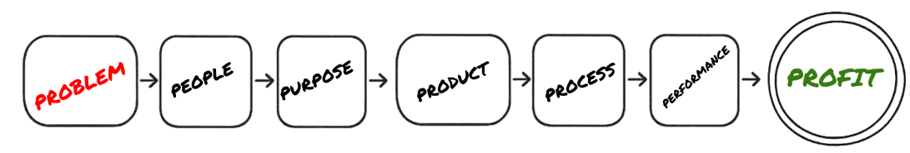

The 7 Layer Framework
From Problem to Profit, this seven-step framework turns messy ideas into real businesses. We start by figuring out what the actual Problem is and who it affects, then nail down a Purpose that gets everyone excited.
Once we know the "why," we build the Product, design a smooth Process around it, and track Performance like crazy—until it's making solid Profit that keeps growing. That's how I build everything from food trucks to trading tools—one layer at a time, no skipping steps.
The Seven Layers at the Heart of Seven Layer Labs
Problem – Start with the pain point.
Every project starts by finding a real problem that's actually worth solving. We dig in, spot the friction, and frame it so the solution practically builds itself.
People – Know exactly who benefits.
Great ideas die without the right people. We figure out who actually needs this—busy parents, day-traders, chefs, whatever—so every decision makes sense to real humans.
Purpose – Define the why.
Here we figure out the mission. What unique value can we actually deliver? Why should anyone care? A clear purpose keeps everyone focused and excited.
Product – Build the tangible solution.
Ideas get real here. From quick prototypes to full platforms, we build stuff that people actually love using—whether it's a food truck concept, a trading tool, or an AI app.
Process – Craft the seamless journey.
User flows, system design, operations—this layer turns the vision into smooth experiences. We obsess over every step so customers go from "what is this?" to "this is awesome" without getting stuck.
Performance – Measure, optimize, scale.
KPIs, speed, retention, money—whatever success looks like, we track it. Constant tweaks and improvements keep everything sharp and ready to grow.
Profit – Make it sustainable.
Cool ideas only matter if they last. We figure out business models—subscriptions, licensing, partnerships—that turn value into real money and keep the momentum going.